Tipos Abstratos de Dados
1.1 Dados + operações
Todo programa manipula dados (números, nomes, filas de clientes) por meio de operações (somar, inserir, buscar). Uma estrutura de dados é uma forma de organizar dados na memória para que certas operações fiquem eficientes. A escolha da estrutura muda o custo das operações: buscar um nome numa lista bagunçada exige olhar um por um; numa árvore de busca balanceada, poucos passos bastam.
Pense num caixa eletrônico. Você conhece as operações (sacar, depositar, ver saldo), mas não sabe nem precisa saber como o banco guarda seu dinheiro. Se o banco trocar o sistema por dentro, você continua usando os mesmos botões. Isso é um TAD.
1.2 O que é um TAD
Um Tipo Abstrato de Dados (TAD) é um tipo definido pelas operações que se pode fazer com ele, e não pela forma como é representado na memória. Ele tem duas faces:
- Especificação (interface): o nome das operações, o que cada uma recebe, devolve e garante. É o “contrato”.
- Implementação: a representação concreta (vetor, nós encadeados…) e o código de cada operação. Fica escondida de quem usa.
Exemplos de TADs deste curso: Pilha, Fila, Deque, Lista, Árvore de busca e Fila de prioridade. Cada um pode ter várias implementações; o usuário escolhe pela eficiência, sem mudar o próprio código.
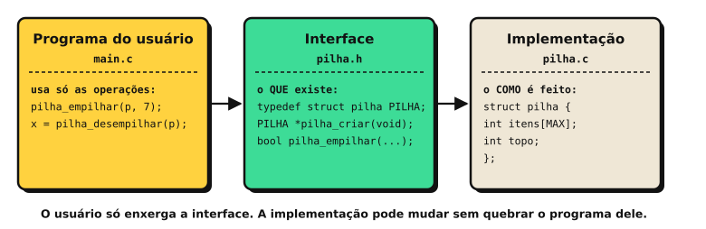
1.3 TAD em C: arquivo .h, arquivo .c e struct opaca
Em C, a separação é feita com dois arquivos. O .h declara o tipo e as operações; o .c define a struct e o código. O truque que esconde a representação é a struct opaca: o .h só diz que o tipo existe, e o usuário manipula apenas ponteiros para ele.
/* ponto.h — interface */
#ifndef PONTO_H
#define PONTO_H
typedef struct ponto PONTO; /* struct opaca: campos escondidos */
PONTO *ponto_criar(float x, float y);
void ponto_apagar(PONTO **p);
float ponto_distancia(const PONTO *a, const PONTO *b);
#endif/* ponto.c — implementação */
#include <stdlib.h>
#include <math.h>
#include "ponto.h"
struct ponto { float x, y; }; /* só este arquivo conhece os campos */
PONTO *ponto_criar(float x, float y) {
PONTO *p = malloc(sizeof(PONTO));
if (p != NULL) { p->x = x; p->y = y; }
return p;
}
void ponto_apagar(PONTO **p) {
if (p != NULL && *p != NULL) { free(*p); *p = NULL; }
}
float ponto_distancia(const PONTO *a, const PONTO *b) {
return sqrtf((a->x - b->x) * (a->x - b->x) + (a->y - b->y) * (a->y - b->y));
}No main.c, escrever p->x dá erro de compilação: o usuário não enxerga os campos. Ele só pode usar as funções. Isso é encapsulamento.
Por que ponto_apagar recebe PONTO **? Para conseguir colocar NULL no ponteiro do usuário depois do free. Assim ele não fica com um ponteiro “pendurado” (dangling pointer) apontando para memória liberada.
1.4 Vantagens
- Reuso: a mesma pilha serve para vários programas.
- Troca de implementação: dá para trocar a pilha em vetor por uma encadeada sem mexer no programa do usuário.
- Correção: só as funções do TAD mexem nos dados, então é mais difícil corromper a estrutura (por exemplo, um
topoerrado). - Divisão de trabalho: quem usa só precisa conhecer o contrato.
1.5 Revisão: ponteiros e alocação dinâmica
As estruturas sequenciais (estáticas) usam vetores de tamanho fixo, definidos na compilação. As encadeadas (dinâmicas) pedem memória ao sistema durante a execução, um nó de cada vez, com malloc, e devolvem com free.
typedef struct no {
int info;
struct no *prox; /* ponteiro para o próximo nó */
} NO;
NO *n = malloc(sizeof(NO)); /* pede memória para 1 nó */
if (n == NULL) { /* sem memória: trate o erro */ }
n->info = 42; /* p->campo é o mesmo que (*p).campo */
n->prox = NULL;
free(n); /* devolve; n agora aponta para lixo */
n = NULL;- Todo
mallocpode devolverNULL: confira antes de usar. - Todo
mallocprecisa de umfreecorrespondente. Senão, há vazamento de memória. - Nunca use um ponteiro depois do
free, e nunca dêfreeduas vezes no mesmo endereço. - Ao remover um nó encadeado, guarde o próximo antes de liberar o atual.
1.6 Revisão: custo das operações (notação O)
Para comparar estruturas, conta-se quantos passos uma operação faz em função do número de elementos n, ignorando constantes. A notação O(·) dá o limite superior do crescimento.
| Notação | Nome | Exemplo neste curso | n = 1 000 000 |
|---|---|---|---|
| O(1) | constante | empilhar, desempilhar, acessar v[i] | 1 |
| O(log n) | logarítmica | busca em AVL, inserir em heap | ~20 |
| O(n) | linear | busca em lista, inserir ordenado em vetor | 1 000 000 |
| O(n log n) | n log n | heapsort | ~20 000 000 |
| O(n²) | quadrática | inserir n elementos ordenados em vetor | 10¹² |
(a) Qual a diferença entre a especificação e a implementação de um TAD? (b) Por que o .h usa typedef struct ponto PONTO; sem listar os campos? (c) O que acontece se você der free(n) e depois ler n->prox?
Pilhas
2.1 A ideia: último a entrar, primeiro a sair
Uma pilha (stack) só permite mexer em uma ponta, o topo. O último elemento empilhado é o primeiro a sair: disciplina LIFO (Last In, First Out). Exemplos: pilha de pratos, o botão “desfazer” de um editor, o “voltar” do navegador e a pilha de chamadas de funções do próprio C (cada chamada empilha suas variáveis locais; o return desempilha).
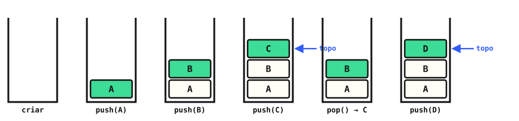
2.2 O TAD Pilha
| Operação | O que faz | Custo |
|---|---|---|
pilha_criar() | cria pilha vazia | O(1) |
pilha_empilhar(p, x) (push) | coloca x no topo; falha se cheia | O(1) |
pilha_desempilhar(p) (pop) | remove e devolve o topo; falha se vazia | O(1) |
pilha_topo(p) (peek/top) | devolve o topo sem remover | O(1) |
pilha_vazia(p), pilha_cheia(p), pilha_tamanho(p) | consultas | O(1) |
pilha_apagar(&p) | libera tudo | O(1) ou O(n) |
Desempilhar de pilha vazia é underflow; empilhar em pilha cheia é overflow. Toda implementação precisa testar esses casos antes de agir.
2.3 Implementação sequencial (vetor)
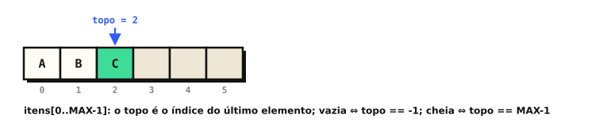
#define MAX 100
struct pilha {
int itens[MAX];
int topo; /* índice do último elemento; -1 = vazia */
};
PILHA *pilha_criar(void) {
PILHA *p = malloc(sizeof(PILHA));
if (p != NULL) p->topo = -1;
return p;
}
bool pilha_vazia(const PILHA *p) { return p->topo == -1; }
bool pilha_cheia(const PILHA *p) { return p->topo == MAX - 1; }
bool pilha_empilhar(PILHA *p, int x) {
if (pilha_cheia(p)) return false; /* overflow */
p->itens[++p->topo] = x; /* sobe o topo e grava */
return true;
}
bool pilha_desempilhar(PILHA *p, int *x) {
if (pilha_vazia(p)) return false; /* underflow */
*x = p->itens[p->topo--]; /* lê e desce o topo */
return true;
}Repare que desempilhar não apaga o valor do vetor: só move o topo. O valor antigo vira lixo e será sobrescrito no próximo push.
2.4 Implementação encadeada
Cada elemento é um nó alocado na hora. O topo é o primeiro nó: empilhar insere no início, desempilhar remove do início. Nenhuma das duas precisa percorrer a lista, então ambas são O(1). Não existe “cheia” (só se a memória acabar).
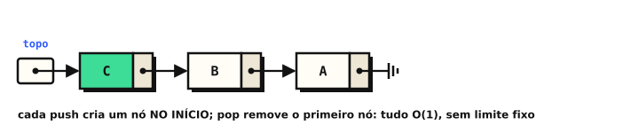
typedef struct no { int info; struct no *prox; } NO;
struct pilha { NO *topo; int tamanho; };
bool pilha_empilhar(PILHA *p, int x) {
NO *n = malloc(sizeof(NO));
if (n == NULL) return false;
n->info = x;
n->prox = p->topo; /* novo nó aponta para o antigo topo */
p->topo = n; /* e vira o topo */
p->tamanho++;
return true;
}
bool pilha_desempilhar(PILHA *p, int *x) {
if (p->topo == NULL) return false;
NO *velho = p->topo;
*x = velho->info;
p->topo = velho->prox; /* guarda o próximo ANTES do free */
free(velho);
p->tamanho--;
return true;
}| Sequencial | Encadeada | |
|---|---|---|
| Tamanho máximo | fixo (MAX) | limitado pela memória |
| Memória por elemento | só o dado | dado + ponteiro |
| Desperdício | posições não usadas do vetor | nenhum (mas cada malloc tem custo) |
| push / pop | O(1) | O(1) |
2.5 Aplicação: parênteses balanceados
Uma expressão como {[()()]} está balanceada se cada símbolo de abertura tem um fechamento do mesmo tipo, na ordem certa. Algoritmo:
- Percorra os caracteres da esquerda para a direita.
- Abertura
( [ {: empilhe. - Fechamento: se a pilha estiver vazia, ou se o topo não for a abertura correspondente, não está balanceada. Senão, desempilhe.
- No fim, a expressão está balanceada se, e somente se, a pilha estiver vazia.
( [ ) ]| Lido | Ação | Pilha (topo à direita) |
|---|---|---|
| ( | empilha | ( |
| [ | empilha | ( [ |
| ) | topo é [, não combina com ) | erro: não balanceada |
Contar quantos “(” e “)” existem não basta: aqui as quantidades batem, mas a ordem está errada. A pilha verifica a ordem.
2.6 Aplicação: notação pós-fixa (polonesa reversa)
Na notação infixa, o operador fica entre os operandos (5 + 3 * 2) e precisamos de precedência e parênteses. Na pós-fixa, o operador vem depois dos operandos (5 3 2 * +) e a expressão nunca precisa de parênteses. Avaliar pós-fixa com pilha é direto:
- Número: empilhe.
- Operador: desempilhe b (topo) e depois a; empilhe a op b.
- No fim, o resultado é o único elemento da pilha.
5 3 2 * +| Lido | Ação | Pilha |
|---|---|---|
| 5 | empilha | 5 |
| 3 | empilha | 5 3 |
| 2 | empilha | 5 3 2 |
| * | b=2, a=3 → 6 | 5 6 |
| + | b=6, a=5 → 11 | 11 |
A ordem importa em − e /: o primeiro desempilhado é o operando da direita. 8 2 / é 8 / 2 = 4, não 2 / 8.
Conversão infixa → pós-fixa
Operandos vão direto para a saída. Operadores esperam numa pilha: antes de empilhar um operador, desempilhe para a saída os que estão no topo com precedência maior ou igual (para operadores associativos à esquerda). “(” é empilhado; “)” desempilha até o “(”. No fim, esvazie a pilha na saída.
A + B * C e (A + B) * CA + B * C → A B C * + (o * tem precedência e sai antes). (A + B) * C → A B + C * (os parênteses forçam o + a sair antes).
(a) Pilha vazia: push(1), push(2), pop, push(3), push(4), pop, pop, push(5). Qual o conteúdo final (base → topo)? (b) {[()]}() e ([)] estão balanceadas? (c) Avalie 6 2 / 3 4 * +. (d) Converta A * (B + C) - D para pós-fixa.
Filas e Deques
3.1 Primeiro a entrar, primeiro a sair
Numa fila (queue), os elementos entram por uma ponta (o fim) e saem pela outra (o início): disciplina FIFO (First In, First Out). Exemplos: fila de banco, fila de impressão, buffer de teclado, processos esperando a CPU, busca em largura em árvores e grafos.
| Operação | O que faz |
|---|---|
fila_inserir(f, x) (enqueue) | coloca x no fim |
fila_remover(f) (dequeue) | tira e devolve o elemento do início |
fila_frente(f) | consulta o início sem remover |
fila_vazia, fila_cheia, fila_tamanho | consultas |
3.2 O problema da fila em vetor
Primeira ideia: guardar no vetor e remover do índice 0, deslocando todos os outros. Funciona, mas cada remoção custa O(n). Segunda ideia: manter índices inicio e fim que só andam para a direita. As operações viram O(1), mas a fila “anda” pelo vetor e logo parece cheia, mesmo com espaço livre à esquerda.
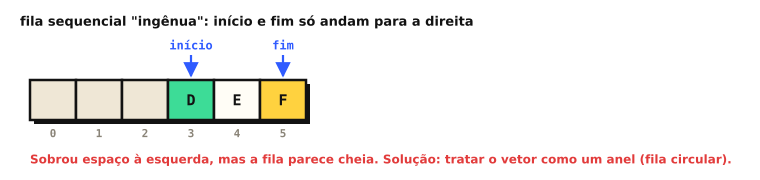
3.3 Fila circular
A solução é tratar o vetor como um anel: depois da última posição vem a primeira. Os índices avançam com o resto da divisão:
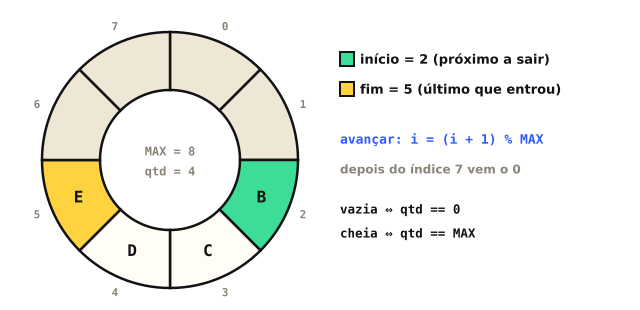
#define MAX 8
struct fila {
int itens[MAX];
int inicio; /* índice do primeiro (próximo a sair) */
int fim; /* índice da próxima posição livre */
int qtd;
};
FILA *fila_criar(void) {
FILA *f = malloc(sizeof(FILA));
if (f != NULL) { f->inicio = 0; f->fim = 0; f->qtd = 0; }
return f;
}
bool fila_inserir(FILA *f, int x) {
if (f->qtd == MAX) return false;
f->itens[f->fim] = x;
f->fim = (f->fim + 1) % MAX; /* dá a volta */
f->qtd++;
return true;
}
bool fila_remover(FILA *f, int *x) {
if (f->qtd == 0) return false;
*x = f->itens[f->inicio];
f->inicio = (f->inicio + 1) % MAX;
f->qtd--;
return true;
}Se usarmos só inicio e fim, a situação inicio == fim acontece tanto com a fila vazia quanto com a fila cheia. Há três soluções clássicas: (1) guardar um contador qtd (usada acima); (2) deixar sempre uma posição vazia, de modo que cheia ⇔ (fim + 1) % MAX == inicio; (3) guardar um booleano. Leia com atenção qual convenção o enunciado usa: “fim” pode ser o último ocupado ou a próxima posição livre.
| Operação | vetor [0..4] | inicio | fim | qtd |
|---|---|---|---|---|
| ins 10, 20, 30 | 10 20 30 _ _ | 0 | 3 | 3 |
| rem → 10 | _ 20 30 _ _ | 1 | 3 | 2 |
| ins 40, 50 | _ 20 30 40 50 | 1 | 0 | 4 |
| ins 60 | 60 20 30 40 50 | 1 | 1 | 5 (cheia) |
| rem → 20 | 60 _ 30 40 50 | 2 | 1 | 4 |
O 60 foi para o índice 0, que tinha sido liberado: é a “volta” do anel.
3.4 Fila encadeada
Com nós, guardam-se dois ponteiros: inicio (para remover) e fim (para inserir). Sem o ponteiro de fim, inserir exigiria percorrer a lista toda: O(n).
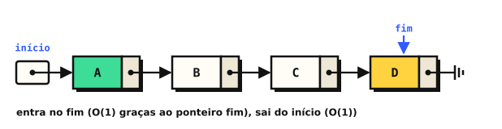
struct fila { NO *inicio, *fim; int qtd; };
bool fila_inserir(FILA *f, int x) {
NO *n = malloc(sizeof(NO));
if (n == NULL) return false;
n->info = x; n->prox = NULL;
if (f->fim == NULL) f->inicio = n; /* fila estava vazia */
else f->fim->prox = n;
f->fim = n;
f->qtd++;
return true;
}
bool fila_remover(FILA *f, int *x) {
if (f->inicio == NULL) return false;
NO *velho = f->inicio;
*x = velho->info;
f->inicio = velho->prox;
if (f->inicio == NULL) f->fim = NULL; /* ficou vazia: arruma o fim! */
free(velho);
f->qtd--;
return true;
}O erro mais comum na fila encadeada: ao remover o último elemento, esquecer de fazer fim = NULL. O ponteiro fim fica apontando para um nó liberado, e a próxima inserção escreve em memória inválida.
3.5 Deque (fila de duas pontas)
O deque (double-ended queue, pronuncia-se “déque”) permite inserir e remover nas duas pontas. Ele generaliza os dois TADs anteriores: usando só uma ponta, vira pilha; inserindo numa ponta e removendo na outra, vira fila.
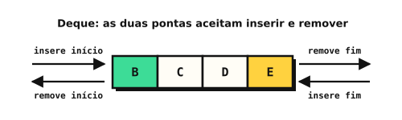
- Em vetor circular: inserir no fim e remover no início funcionam como na fila. Para inserir no início, recue:
inicio = (inicio - 1 + MAX) % MAX(o+ MAXevita índice negativo). Para remover do fim, recue ofimda mesma forma. - Encadeado: use lista duplamente encadeada (Cap. 4). Com encadeamento simples, remover do fim é O(n), porque não dá para voltar ao penúltimo nó.
- Variações: deque de entrada restrita (insere só numa ponta, remove nas duas) e de saída restrita (insere nas duas, remove só numa).
Uma fila de prioridade não é uma fila FIFO: sai primeiro quem tem maior prioridade, não quem chegou antes. Ela tem implementação própria (o heap) e é o assunto do Cap. 9.
Fila circular com MAX = 4 (convenção do exemplo: fim = próxima livre, com qtd), começando vazia em inicio = fim = 0. Faça: ins A, ins B, ins C, rem, ins D, ins E, rem, ins F. (a) Qual o conteúdo do vetor? (b) Quanto valem inicio, fim e qtd? (c) A última inserção teve sucesso?
Listas
4.1 O TAD Lista
Pilhas e filas restringem onde se insere e remove. A lista linear não restringe: dá para inserir, remover e buscar em qualquer posição. Cada elemento tem um antecessor e um sucessor (exceto o primeiro e o último). Operações típicas:
lista_inserir(L, x): no fim, no início, numa posição, ou ordenado (mantendo a lista em ordem);lista_remover(L, chave),lista_buscar(L, chave);lista_tamanho,lista_vazia,lista_cheia,lista_imprimir,lista_apagar.
4.2 Lista sequencial (estática)
Os elementos ficam em posições consecutivas de um vetor, mais um contador. A posição física é a posição lógica: o i-ésimo elemento está em itens[i], com acesso O(1). O preço aparece na inserção e na remoção no meio: é preciso deslocar os elementos.
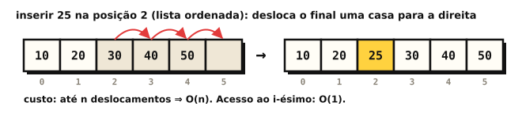
#define MAX 100
struct lista { int itens[MAX]; int qtd; };
/* insere mantendo a ordem crescente */
bool lista_inserir_ordenado(LISTA *l, int x) {
if (l->qtd == MAX) return false;
int i = l->qtd - 1;
while (i >= 0 && l->itens[i] > x) { /* desloca os maiores para a direita */
l->itens[i + 1] = l->itens[i];
i--;
}
l->itens[i + 1] = x;
l->qtd++;
return true;
}
/* remove a chave x, fechando o buraco */
bool lista_remover(LISTA *l, int x) {
int i = 0;
while (i < l->qtd && l->itens[i] != x) i++;
if (i == l->qtd) return false; /* não achou */
for (; i < l->qtd - 1; i++) l->itens[i] = l->itens[i + 1];
l->qtd--;
return true;
}Busca: sequencial e binária
Numa lista qualquer, a busca é sequencial: O(n). Se a lista sequencial estiver ordenada, dá para usar a busca binária: olhe o meio; se a chave for menor, descarte a metade direita; senão, a esquerda. Cada passo corta o problema pela metade: O(log n).
int busca_binaria(const LISTA *l, int x) {
int ini = 0, fim = l->qtd - 1;
while (ini <= fim) {
int meio = (ini + fim) / 2;
if (l->itens[meio] == x) return meio;
if (x < l->itens[meio]) fim = meio - 1;
else ini = meio + 1;
}
return -1; /* não está na lista */
}Busca binária só funciona em estrutura ordenada e com acesso direto ao meio. Numa lista encadeada, mesmo ordenada, chegar ao meio custa O(n), então a vantagem desaparece.
4.3 Lista simplesmente encadeada (dinâmica)
Cada nó guarda o dado e um ponteiro para o próximo. Os nós ficam espalhados pela memória; a ordem lógica é dada pelos ponteiros. O último aponta para NULL.
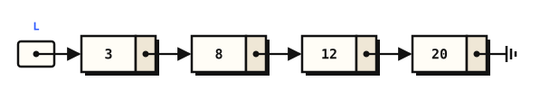
Inserção: a ordem das ligações importa
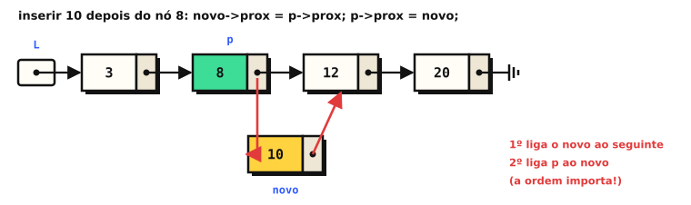
Se você fizer p->prox = novo primeiro, perde o único caminho até o resto da lista (o nó 12 em diante). Regra de ouro: ligue o novo nó antes de desligar o antigo.
struct lista { NO *inicio; int qtd; };
bool lista_inserir_ordenado(LISTA *l, int x) {
NO *novo = malloc(sizeof(NO));
if (novo == NULL) return false;
novo->info = x;
NO *ant = NULL, *p = l->inicio;
while (p != NULL && p->info < x) { ant = p; p = p->prox; }
novo->prox = p; /* 1º: novo aponta para o sucessor */
if (ant == NULL) l->inicio = novo; /* caso especial: virou o primeiro */
else ant->prox = novo; /* 2º: antecessor aponta para o novo */
l->qtd++;
return true;
}
bool lista_remover(LISTA *l, int x) {
NO *ant = NULL, *p = l->inicio;
while (p != NULL && p->info != x) { ant = p; p = p->prox; }
if (p == NULL) return false;
if (ant == NULL) l->inicio = p->prox; /* removendo o primeiro */
else ant->prox = p->prox; /* "pula" o nó */
free(p);
l->qtd--;
return true;
}Repare no padrão dos dois ponteiros ant e p andando juntos: numa lista simples, só dá para alterar o ponteiro de um nó se você estiver parado no anterior.
4.4 Variações do encadeamento
Com nó-cabeça (sentinela)
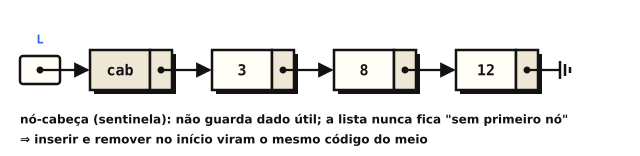
Como sempre existe um nó antes do primeiro elemento, ant nunca é NULL e os casos especiais “inserir/remover no início” somem: o mesmo código serve para qualquer posição. O nó-cabeça também pode guardar informações da lista (tamanho, por exemplo).
Circular
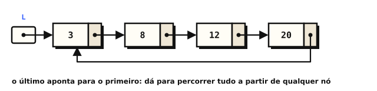
Não existe NULL no fim. Útil para rodízios (escalonamento round-robin, jogos de turnos). Cuidado com o laço de percurso: a condição de parada passa a ser “voltei ao início” (do { … } while (p != L)), senão o laço é infinito. Truque comum: guardar o ponteiro para o último nó; o primeiro é ultimo->prox, e inserir no início ou no fim fica O(1).
Duplamente encadeada
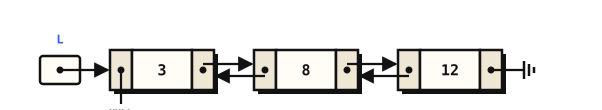
Com o ponteiro ant em cada nó, dá para andar nos dois sentidos e remover um nó conhecendo só ele mesmo, sem procurar o anterior:
typedef struct no2 { int info; struct no2 *ant, *prox; } NO2;
/* remove o nó p de uma lista dupla com início em *L */
void remover_no(NO2 **L, NO2 *p) {
if (p->ant != NULL) p->ant->prox = p->prox;
else *L = p->prox; /* p era o primeiro */
if (p->prox != NULL) p->prox->ant = p->ant;
free(p);
}
/* insere novo depois de p: quatro ponteiros mudam */
void inserir_depois(NO2 *p, NO2 *novo) {
novo->ant = p;
novo->prox = p->prox;
if (p->prox != NULL) p->prox->ant = novo;
p->prox = novo;
}A variação mais “completa” é a duplamente encadeada circular com nó-cabeça: sem casos especiais e com acesso O(1) às duas pontas. É a base de um bom deque.
| Variação | Ganha | Paga |
|---|---|---|
| Simples | menos memória por nó | só anda para frente; precisa do anterior para remover |
| Com nó-cabeça | código sem casos especiais | um nó a mais |
| Circular | percorre a partir de qualquer nó; início e fim em O(1) com ponteiro para o último | cuidado com laços infinitos |
| Dupla | anda nos dois sentidos; remove dado o nó em O(1) | um ponteiro a mais por nó; mais ligações para manter |
4.5 Sequencial × encadeada
| Operação | Sequencial | Encadeada |
|---|---|---|
| Acessar o i-ésimo | O(1) | O(n) |
| Buscar (ordenada) | O(log n), busca binária | O(n) |
| Inserir/remover dado o local | O(n), desloca | O(1), religa ponteiros |
| Tamanho | fixo | cresce conforme a memória |
| Memória extra | vetor ocioso | 1 ou 2 ponteiros por nó |
4.6 Listas generalizadas
Numa lista generalizada, cada elemento pode ser um átomo (um dado simples) ou outra lista. A definição é recursiva, como em LISP: L = (a, (b, c), d) tem três elementos, e o segundo é a lista (b, c). Também existe a lista vazia ( ).
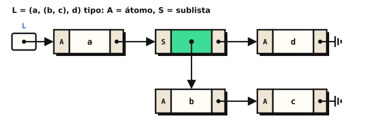
typedef struct ng {
int tipo; /* 0 = átomo, 1 = sublista */
union {
char atomo;
struct ng *sub; /* primeiro nó da sublista */
} info;
struct ng *prox;
} NOG;Operações clássicas: cabeça (head) devolve o primeiro elemento; cauda (tail) devolve a lista sem o primeiro. Para L = (a, (b, c), d): cabeça(L) = a; cauda(L) = ((b, c), d); cabeça(cauda(L)) = (b, c). A profundidade é o maior número de parênteses aninhados: aqui, 2.
Algoritmos sobre listas generalizadas são naturalmente recursivos: para um átomo, trate o valor; para uma sublista, chame a função de novo. Elas representam estruturas aninhadas: expressões, polinômios em várias variáveis, árvores gerais e o próprio código LISP.
/* conta todos os átomos, em qualquer nível */
int contar_atomos(NOG *L) {
int c = 0;
for (NOG *p = L; p != NULL; p = p->prox)
c += (p->tipo == 0) ? 1 : contar_atomos(p->info.sub);
return c;
}4.7 Listas cruzadas (multilistas) e matrizes esparsas
Numa lista cruzada (ou ortogonal), cada nó pertence a duas listas ao mesmo tempo. O exemplo clássico é a matriz esparsa: uma matriz em que quase todos os valores são zero. Guardar só os não nulos economiza muita memória.
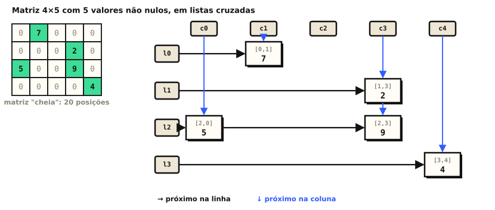
typedef struct ne {
int lin, col;
double valor;
struct ne *direita; /* próximo não nulo na mesma linha */
struct ne *abaixo; /* próximo não nulo na mesma coluna */
} NOE;
typedef struct {
int m, n;
NOE **linhas; /* vetor de m cabeças de linha */
NOE **colunas; /* vetor de n cabeças de coluna */
} MATRIZ_ESPARSA;- Acessar (i, j): percorra a lista da linha i até achar a coluna j (ou passar dela). Custo proporcional aos não nulos da linha.
- Somar linhas, multiplicar: percorre só os não nulos, com ganho enorme quando a matriz é grande e vazia.
- Quando compensa? Cada nó guarda 5 campos em vez de 1 número. Para uma matriz m × n com k não nulos, a versão cruzada usa algo como 5k + m + n posições, contra m·n da matriz comum. Compensa quando k é bem menor que m·n.
Matriz 1000 × 1000 com 3000 não nulos. Comum: 1 000 000 posições. Cruzada: 5 · 3000 + 1000 + 1000 = 17 000, cerca de 1,7% do espaço.
(a) Numa lista simples, por que inserir no fim custa O(n) e como deixar O(1)? (b) Escreva a ordem correta das ligações para remover o nó p de uma lista dupla. (c) Para L = ((a, b), c, (d, (e))), dê cabeça(L), cauda(L), o número de átomos e a profundidade. (d) Uma matriz 500 × 400 tem 1000 não nulos. Quantas posições ocupa a versão comum e (aproximadamente) a cruzada?
Árvores e Árvores Binárias
5.1 Por que árvores
Listas são lineares: cada elemento tem um sucessor. Muitas coisas são hierárquicas: pastas e arquivos, o organograma de uma empresa, a estrutura de um livro, uma expressão matemática. A árvore representa isso. E, organizada do jeito certo (Caps. 6 a 9), permite buscar, inserir e remover em O(log n).
5.2 Terminologia
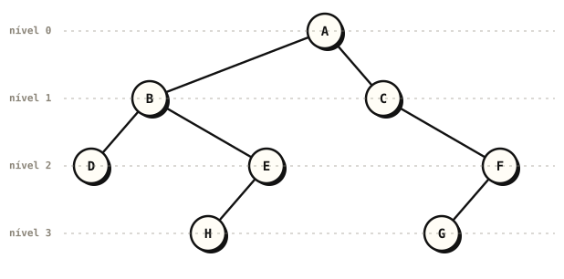
| Termo | Significado | Na figura |
|---|---|---|
| Raiz | nó sem pai, no topo | A |
| Pai / filho / irmãos | ligação direta; irmãos têm o mesmo pai | B é pai de D e E (irmãos) |
| Folha (nó externo) | nó sem filhos | D, H, G |
| Nó interno | tem pelo menos um filho | A, B, C, E, F |
| Grau de um nó | número de filhos | grau(B) = 2, grau(C) = 1 |
| Nível (profundidade) | distância (em arestas) até a raiz | nível(H) = 3 |
| Altura | maior distância de um nó até uma folha abaixo dele | altura(A) = 3 |
| Subárvore | um nó e todos os seus descendentes | C, F, G |
| Ancestral / descendente | qualquer nó no caminho até a raiz / abaixo | A e B são ancestrais de H |
| Floresta | conjunto de árvores disjuntas | tirando A, sobram 2 árvores |
Há duas convenções. Contando arestas: folha tem altura 0 e árvore vazia, −1. Contando níveis (nós): folha tem altura 1 e árvore vazia, 0. Esta apostila usa arestas no texto e, nos códigos de AVL, a altura em nós (vazia = 0), porque simplifica o código. A diferença entre alturas, usada no balanceamento, é a mesma nas duas. Use a convenção do seu professor.
5.3 Árvores binárias
Uma árvore binária é vazia ou é formada por uma raiz e duas subárvores binárias, a esquerda e a direita. Cada nó tem no máximo 2 filhos, e a posição importa: um filho à esquerda é diferente de um filho à direita.
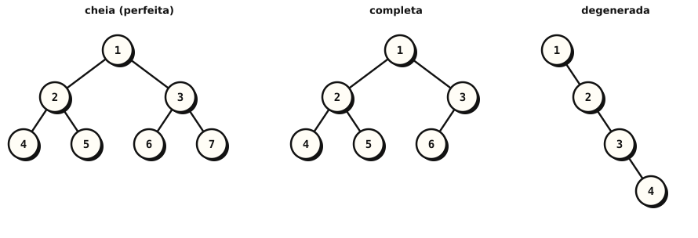
Também se usa estritamente binária: todo nó tem 0 ou 2 filhos (nunca só 1).
Propriedades (altura h em arestas)
- O nível i tem no máximo 2i nós.
- Uma árvore de altura h tem no máximo 2h+1 − 1 nós (cheia).
- Com n nós, a altura mínima é ⌊log₂ n⌋ (árvore completa) e a máxima é n − 1 (degenerada).
- Uma árvore binária com n nós tem n + 1 ponteiros nulos.
A altura decide o custo das operações em árvores de busca. Entre a completa (altura ≈ log₂ n) e a degenerada (altura n − 1), a diferença para n = 1 000 000 é de 20 contra 999 999 passos. Os Caps. 7 e 8 servem para garantir que a altura fique perto de log₂ n.
5.4 Representações
Encadeada
typedef struct no_arv {
int info;
struct no_arv *esq, *dir;
} NO_ARV;Em vetor (só para árvores completas)
Guarde os nós nível por nível, da esquerda para a direita, começando no índice 0. Então, para o nó do índice i: filho esquerdo em 2i + 1, filho direito em 2i + 2 e pai em (i − 1) / 2 (divisão inteira). Não é preciso guardar ponteiros. É a representação do heap (Cap. 9). Para árvores não completas, sobram buracos no vetor e há desperdício.
Árvores gerais como binárias
Um nó de árvore geral pode ter muitos filhos. A representação filho-esquerdo / irmão-direito transforma qualquer árvore em binária: o ponteiro esquerdo aponta para o primeiro filho e o direito para o próximo irmão.
5.5 Percursos
Percorrer é visitar cada nó exatamente uma vez. Os três percursos em profundidade diferem só em quando a raiz é visitada:
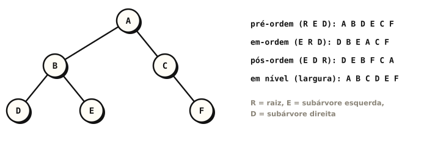
void pre_ordem(NO_ARV *r) { /* Raiz, Esquerda, Direita */
if (r == NULL) return;
visitar(r);
pre_ordem(r->esq);
pre_ordem(r->dir);
}
void em_ordem(NO_ARV *r) { /* Esquerda, Raiz, Direita */
if (r == NULL) return;
em_ordem(r->esq);
visitar(r);
em_ordem(r->dir);
}
void pos_ordem(NO_ARV *r) { /* Esquerda, Direita, Raiz */
if (r == NULL) return;
pos_ordem(r->esq);
pos_ordem(r->dir);
visitar(r);
}O percurso em nível (em largura) usa uma fila: enfileire a raiz; enquanto a fila não estiver vazia, remova um nó, visite-o e enfileire seus filhos (esquerdo, depois direito).
Contorne a árvore por fora, começando à esquerda da raiz, como se fosse uma cerca. Pré-ordem: anote o nó quando passar pela esquerda dele. Em-ordem: quando passar por baixo. Pós-ordem: quando passar pela direita.
Aplicações que caem em prova
- Liberar a árvore: tem que ser em pós-ordem (filhos antes do pai), senão você perde os ponteiros para os filhos.
- Árvore de expressão (
(a + b) * c: raiz *, com + à esquerda): pré-ordem dá a prefixa* + a b c, em-ordem dá a infixa (sem parênteses) e pós-ordem dá a pós-fixaa b + c *. - Reconstrução: pré-ordem + em-ordem (ou pós + em) determinam a árvore. A pré-ordem diz quem é a raiz; a em-ordem diz quem fica à esquerda e quem fica à direita dela.
int altura(NO_ARV *r) { /* em arestas; vazia = -1 */
if (r == NULL) return -1;
int he = altura(r->esq), hd = altura(r->dir);
return 1 + (he > hd ? he : hd);
}
int contar(NO_ARV *r) { return r == NULL ? 0 : 1 + contar(r->esq) + contar(r->dir); }
void apagar(NO_ARV *r) { /* pós-ordem! */
if (r == NULL) return;
apagar(r->esq); apagar(r->dir); free(r);
}Pré-ordem: A B D E C F; em-ordem: D B E A C F. A pré começa com A, então A é a raiz. Na em-ordem, à esquerda de A estão D B E e à direita, C F. Na subárvore esquerda, a pré (B D E) diz que B é a raiz, com D à esquerda e E à direita. Na direita, C é a raiz e F está à sua direita (F vem depois de C na em-ordem). O resultado é a árvore da Figura 5.3.
(a) Na árvore da Figura 5.1, qual a altura de B e o nível de G? Quantas folhas há? (b) Uma árvore binária tem altura 4 (em arestas). Qual o número máximo de nós? E o mínimo? (c) Dê a pré, a em e a pós-ordem da árvore de expressão de a * (b - c) + d. (d) Reconstrua a árvore com pós-ordem D E B F C A e em-ordem D B E A C F.
Árvore Binária de Busca (ABB)
6.1 A propriedade de busca
Uma ABB (Binary Search Tree) é uma árvore binária em que, para todo nó com chave k:
- todas as chaves da subárvore esquerda são menores que k;
- todas as chaves da subárvore direita são maiores que k.
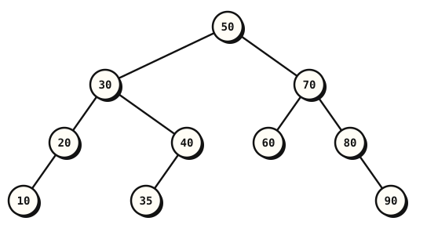
O percurso em-ordem de uma ABB lista as chaves em ordem crescente. Na figura: 10 20 30 35 40 50 60 70 80 90. É a forma mais rápida de conferir se uma árvore é ABB.
Não basta comparar cada nó com seus filhos diretos. Uma árvore com raiz 50, filho esquerdo 30 e, à direita do 30, um 60, passa nesse teste local, mas não é ABB: o 60 está à esquerda do 50. A regra vale para a subárvore inteira.
6.2 Busca
Compare a chave com a raiz: igual, achou; menor, desça à esquerda; maior, desça à direita. Se chegar em NULL, a chave não está na árvore. Cada passo desce um nível, então o custo é O(h), onde h é a altura.
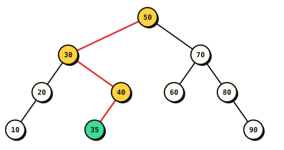
NO_ARV *abb_buscar(NO_ARV *r, int x) {
while (r != NULL && r->info != x)
r = (x < r->info) ? r->esq : r->dir;
return r; /* NULL se não achou */
}Mínimo: desça sempre à esquerda até não dar mais. Máximo: sempre à direita.
6.3 Inserção
Faça a busca pela chave nova. Ela termina num ponteiro NULL: é exatamente ali que o novo nó entra, sempre como folha.
NO_ARV *abb_inserir(NO_ARV *r, int x) { /* devolve a nova raiz da subárvore */
if (r == NULL) {
NO_ARV *n = malloc(sizeof(NO_ARV));
n->info = x; n->esq = n->dir = NULL;
return n;
}
if (x < r->info) r->esq = abb_inserir(r->esq, x);
else if (x > r->info) r->dir = abb_inserir(r->dir, x);
/* x == r->info: chave repetida, não insere */
return r;
}
/* uso: raiz = abb_inserir(raiz, 42); */Inserir 50, 30, 70, 20, 40, 60, 80, 10, 35, 90 numa ABB vazia gera a árvore da Figura 6.1. O 35, por exemplo: 35 < 50 (esquerda), 35 > 30 (direita), 35 < 40 (esquerda) → vira filho esquerdo do 40.
6.4 Remoção: três casos
Primeiro, encontre o nó. Depois, depende de quantos filhos ele tem:
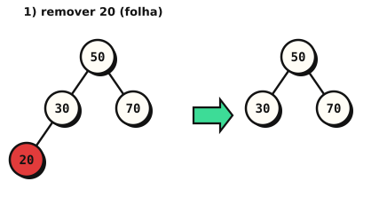
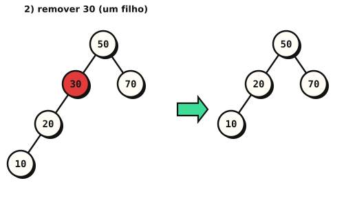
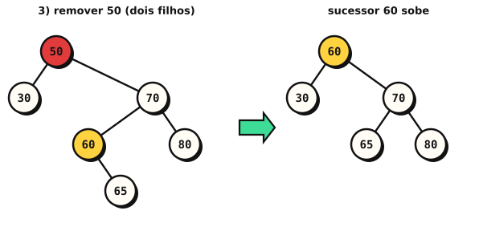
- Folha: libere o nó; o ponteiro do pai vira
NULL. - Um filho: o ponteiro do pai passa a apontar para o único filho; libere o nó.
- Dois filhos: troque a chave pela do sucessor em-ordem (o menor da subárvore direita: um passo à direita, depois tudo à esquerda) ou do predecessor (o maior da subárvore esquerda). Depois remova esse sucessor/predecessor, que tem no máximo um filho.
NO_ARV *abb_remover(NO_ARV *r, int x) {
if (r == NULL) return NULL; /* não achou */
if (x < r->info) r->esq = abb_remover(r->esq, x);
else if (x > r->info) r->dir = abb_remover(r->dir, x);
else { /* achou */
if (r->esq == NULL || r->dir == NULL) { /* casos 1 e 2 */
NO_ARV *filho = (r->esq != NULL) ? r->esq : r->dir;
free(r);
return filho; /* pode ser NULL */
}
NO_ARV *s = r->dir; /* caso 3: sucessor */
while (s->esq != NULL) s = s->esq;
r->info = s->info;
r->dir = abb_remover(r->dir, s->info);
}
return r;
}O sucessor nunca tem filho esquerdo (senão ele não seria o menor). Por isso removê-lo é sempre o caso 1 ou 2. Se a questão não disser, pergunte-se qual convenção o professor usa: sucessor ou predecessor. As árvores resultantes são diferentes.
6.5 Custo e degeneração
Busca, inserção e remoção custam O(h). Se a árvore estiver equilibrada, h ≈ log₂ n. Mas a forma depende da ordem de inserção: inserir chaves já ordenadas produz uma árvore degenerada, com h = n − 1, e tudo vira O(n), como numa lista.
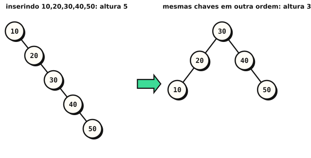
| Caso | Altura | Busca/inserção/remoção |
|---|---|---|
| melhor / médio (chaves aleatórias) | O(log n) | O(log n) |
| pior (chaves ordenadas) | n − 1 | O(n) |
Para garantir O(log n) sempre, a árvore precisa se rebalancear sozinha: é o que fazem a AVL (Cap. 7) e a rubro-negra (Cap. 8).
(a) Insira, nesta ordem, 45, 20, 70, 10, 30, 50, 90, 35, 60 numa ABB vazia e desenhe o resultado. (b) Na árvore obtida, remova o 20 usando o sucessor. (c) Depois, remova o 45 (raiz) usando o sucessor. (d) Qual a sequência em-ordem final?
Árvores AVL
7.1 A regra da AVL
Uma AVL é uma ABB em que, para todo nó, as alturas das duas subárvores diferem de no máximo 1. Essa diferença é o fator de balanceamento (FB):
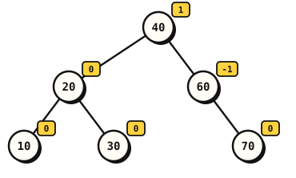
Com essa regra, a altura de uma AVL com n nós é no máximo cerca de 1,44 log₂ n. Busca, inserção e remoção ficam O(log n) no pior caso.
Alguns livros e professores definem FB = altura(direita) − altura(esquerda), que inverte todos os sinais. Confira a definição antes de aplicar a tabela de rotações. Aqui, positivo = pesado à esquerda.
7.2 Inserção: onde a árvore desequilibra
- Insira como numa ABB comum (o novo nó entra como folha, FB = 0).
- Volte pelo caminho até a raiz atualizando as alturas e os FBs.
- O primeiro nó (de baixo para cima) com FB = +2 ou −2 é o nó desbalanceado. Uma rotação nele resolve, e na inserção a árvore inteira volta a ficar AVL.
7.3 As rotações
Rotações rearranjam três nós e suas subárvores preservando a ordem da ABB (a em-ordem não muda) e reduzem a altura do lado pesado.
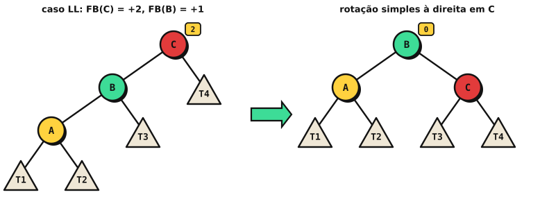
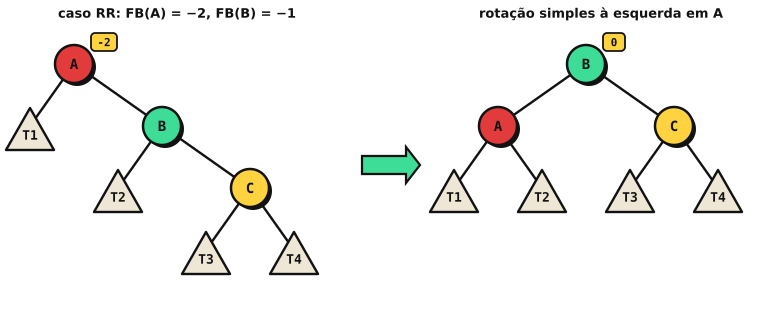
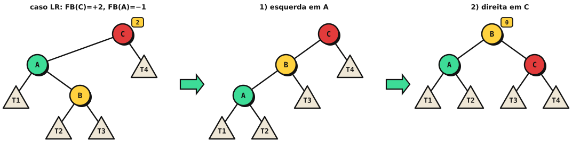
| FB do nó | FB do filho do lado pesado | Caso | Rotação |
|---|---|---|---|
| +2 | filho esq. com +1 (ou 0) | LL (esquerda-esquerda) | simples à direita no nó |
| −2 | filho dir. com −1 (ou 0) | RR (direita-direita) | simples à esquerda no nó |
| +2 | filho esq. com −1 | LR (esquerda-direita) | dupla: esquerda no filho, direita no nó |
| −2 | filho dir. com +1 | RL (direita-esquerda) | dupla: direita no filho, esquerda no nó |
Se os sinais do nó e do filho são iguais (linha reta: “/” ou “\”), rotação simples para o lado contrário do peso. Se são opostos (zigue-zague: “<” ou “>”), rotação dupla: primeiro endireite o zigue-zague no filho, depois faça a simples no nó.
typedef struct no_avl {
int info, altura; /* altura em nós: folha = 1, NULL = 0 */
struct no_avl *esq, *dir;
} NO_AVL;
int alt(NO_AVL *n) { return n ? n->altura : 0; }
int max(int a, int b) { return a > b ? a : b; }
void atualiza(NO_AVL *n) { n->altura = 1 + max(alt(n->esq), alt(n->dir)); }
int fb(NO_AVL *n) { return alt(n->esq) - alt(n->dir); }
NO_AVL *rot_direita(NO_AVL *c) { /* caso LL */
NO_AVL *b = c->esq;
c->esq = b->dir; /* T3 passa para C */
b->dir = c;
atualiza(c); atualiza(b); /* C primeiro: agora ele está embaixo */
return b; /* nova raiz da subárvore */
}
NO_AVL *rot_esquerda(NO_AVL *a) { /* caso RR */
NO_AVL *b = a->dir;
a->dir = b->esq;
b->esq = a;
atualiza(a); atualiza(b);
return b;
}
NO_AVL *avl_inserir(NO_AVL *r, int x) {
if (r == NULL) {
NO_AVL *n = malloc(sizeof(NO_AVL));
n->info = x; n->altura = 1; n->esq = n->dir = NULL;
return n;
}
if (x < r->info) r->esq = avl_inserir(r->esq, x);
else if (x > r->info) r->dir = avl_inserir(r->dir, x);
else return r; /* repetido */
atualiza(r);
int f = fb(r);
if (f > 1) { /* pesado à esquerda */
if (fb(r->esq) < 0) r->esq = rot_esquerda(r->esq); /* LR */
return rot_direita(r); /* LL */
}
if (f < -1) { /* pesado à direita */
if (fb(r->dir) > 0) r->dir = rot_direita(r->dir); /* RL */
return rot_esquerda(r); /* RR */
}
return r;
}7.4 Exemplo: inserindo 10, 20, 30, 40, 50
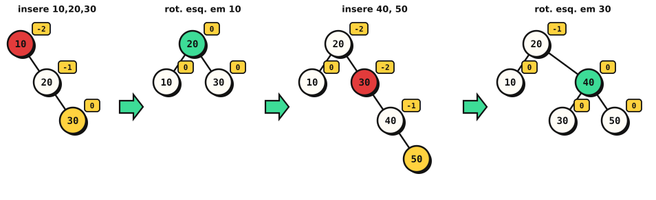
- 10, 20, 30: o 10 fica com FB = −2 e o filho 20 com −1 (sinais iguais): RR, rotação à esquerda em 10. Raiz: 20.
- 40 entra à direita do 30 (FBs: 30 → −1, 20 → −1). Tudo ok.
- 50 entra à direita do 40. Subindo: 40 → −1, 30 → −2. O primeiro desbalanceado de baixo para cima é o 30, com filho 40 em −1: RR, rotação à esquerda em 30. (O 20 também estaria com −2, mas a rotação em 30 já reduz a altura e conserta o 20.)
7.5 Remoção
Remova como numa ABB (casos 1, 2 e 3, Cap. 6) e volte até a raiz atualizando alturas e FBs, aplicando a mesma tabela de rotações onde FB = ±2. Duas diferenças em relação à inserção:
- O filho do lado pesado pode ter FB = 0. Nesse caso use a rotação simples (é o “ou 0” da tabela).
- Uma rotação pode diminuir a altura da subárvore e desbalancear um ancestral: na remoção, podem ser necessárias várias rotações, até O(log n), uma por nível.
| Operação | Custo | Rotações |
|---|---|---|
| Busca | O(log n) | 0 |
| Inserção | O(log n) | no máximo 1 (simples ou dupla) |
| Remoção | O(log n) | até O(log n) |
(a) Insira 30, 20, 10, 25, 40, 50 numa AVL vazia. Indique cada rotação (tipo e nó) e desenhe a árvore final com os FBs. (b) Insira 50, 20, 30 numa AVL vazia: qual o caso e qual a rotação? (c) Por que a altura de uma AVL é O(log n)?
Árvores Rubro-Negras
8.1 Balanceamento com cores
A AVL é rígida: mantém as alturas quase iguais e, para isso, pode fazer muitas rotações nas remoções. A árvore rubro-negra (RN) aceita um balanceamento mais folgado. Cada nó ganha um bit de cor, vermelho ou preto, e algumas regras sobre as cores garantem que nenhum caminho seja mais que o dobro de outro.
8.2 As cinco propriedades
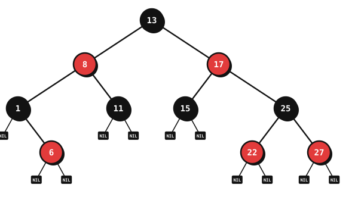
- Todo nó é vermelho ou preto.
- A raiz é preta.
- Toda folha nula (NIL) é preta.
- Se um nó é vermelho, seus dois filhos são pretos (não existem dois vermelhos seguidos).
- Para cada nó, todos os caminhos dele até as folhas NIL têm o mesmo número de nós pretos. Esse número é a altura negra.
Pela propriedade 5, todo caminho tem a mesma quantidade de pretos. Pela 4, entre dois pretos cabe no máximo um vermelho. Então o caminho mais longo (alternando preto e vermelho) tem no máximo o dobro do mais curto (só pretos). Daí sai que a altura é no máximo 2 log₂(n + 1).
Do 13 até qualquer NIL há exatamente 2 nós pretos internos (ex.: 13 → 8 → 1, ou 13 → 17 → 25), sem contar o próprio NIL. Nenhum vermelho (8, 17, 6, 22, 27) tem filho vermelho. A raiz 13 é preta. É uma RN válida.
8.3 Inserção
Insira como numa ABB e pinte o novo nó de vermelho. Pintar de vermelho nunca quebra a propriedade 5 (não muda a contagem de pretos); o único risco é quebrar a 4, se o pai também for vermelho. Nesse caso, olhe o tio (irmão do pai). Notação: N = novo, P = pai, G = avô, U = tio.
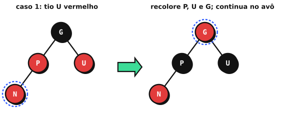
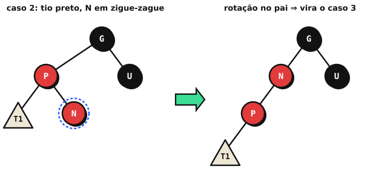
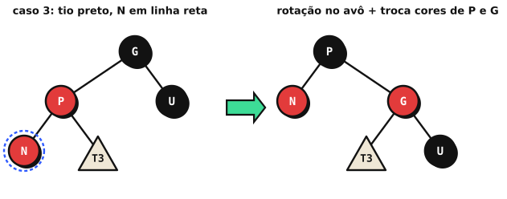
- Se N é a raiz: pinte de preto. Fim.
- Se P é preto: nada a fazer. Fim.
- P vermelho e tio vermelho (caso 1): recolore P e U de preto e G de vermelho; continue a partir de G.
- P vermelho e tio preto (ou NIL), N em zigue-zague (caso 2): rotação no pai para endireitar; agora o antigo P faz o papel de N, em linha reta.
- Tio preto e N em linha reta (caso 3): rotação no avô (no sentido contrário ao lado de P) e troque as cores de P e G. Fim.
- Ao final, garanta que a raiz é preta.
Quando P é filho direito de G, os casos são os mesmos, espelhados.
- 10: raiz, pintada de preto.
- 20: vermelho, filho direito do 10 (pai preto). Ok.
- 30: vermelho, filho do 20 (vermelho). Tio = NIL (preto), linha reta à direita → caso 3: rotação à esquerda em 10 e troca de cores. Raiz 20 preto, filhos 10 e 30 vermelhos.
- 15: vai para a direita do 10 (vermelho). Tio 30 é vermelho → caso 1: 10 e 30 ficam pretos e 20 fica vermelho; 20 é a raiz, então volta a preto. Resultado: 20 (P), 10 (P), 30 (P), 15 (V).
- 25: esquerda do 30 (preto). Pai preto: nada a fazer.
typedef enum { VERMELHO, PRETO } COR;
typedef struct no_rn {
int info; COR cor;
struct no_rn *esq, *dir, *pai;
} NO_RN;
/* corrige depois de inserir n (vermelho) como numa ABB */
void rn_corrigir(NO_RN **raiz, NO_RN *n) {
while (n != *raiz && n->pai->cor == VERMELHO) {
NO_RN *p = n->pai, *g = p->pai;
if (p == g->esq) {
NO_RN *u = g->dir;
if (u != NULL && u->cor == VERMELHO) { /* caso 1 */
p->cor = PRETO; u->cor = PRETO; g->cor = VERMELHO;
n = g;
} else {
if (n == p->dir) { /* caso 2 */
rot_esquerda(raiz, p);
n = p; p = n->pai;
}
p->cor = PRETO; g->cor = VERMELHO; /* caso 3 */
rot_direita(raiz, g);
}
} else { /* espelho: troque esq <-> dir */ }
}
(*raiz)->cor = PRETO;
}Aqui as rotações recebem &raiz e atualizam também os ponteiros pai. NULL faz o papel de NIL preto.
8.4 Remoção (visão geral)
Remove-se como numa ABB. Se o nó que sai fisicamente é vermelho, nada muda. Se é preto, um caminho perde um preto (propriedade 5). O nó que ocupa seu lugar recebe um “preto extra” (fica duplo preto), e esse excesso é empurrado para cima ou absorvido conforme a cor do irmão e dos filhos dele, em quatro casos com recolorações e até 3 rotações. Os detalhes costumam ser cobrados só no nível conceitual.
8.5 AVL × rubro-negra
| AVL | Rubro-negra | |
|---|---|---|
| Regra | |FB| ≤ 1 em todo nó | 5 propriedades de cor |
| Altura máxima | ≈ 1,44 log₂ n | 2 log₂(n + 1) |
| Busca | um pouco mais rápida (mais baixa) | O(log n) |
| Rotações por inserção | até 1 (simples ou dupla) | até 2 |
| Rotações por remoção | até O(log n) | até 3 |
| Informação extra por nó | altura ou FB | 1 bit de cor |
| Onde aparece | bancos de dados com muitas buscas | C++ std::map, Java TreeMap, kernel do Linux |
Toda rubro-negra corresponde a uma árvore 2-3-4 (árvore B de ordem 4): junte cada nó preto com seus filhos vermelhos num único “supernó” de 2, 3 ou 4 filhos. A recoloração do caso 1 corresponde a dividir um supernó cheio, e as rotações são só formas de redesenhar esse supernó como árvore binária.
(a) Uma árvore com raiz vermelha pode ser RN? E com dois vermelhos seguidos? (b) Insira 5, 10, 15, 20 numa RN vazia, indicando cada caso. (c) Uma RN tem 7 nós, todos pretos. Que forma ela precisa ter? Qual a sua altura negra (contando a raiz, sem contar os NIL)?
Fila de Prioridade e Heap
9.1 O TAD fila de prioridade
Numa fila de prioridade, cada elemento tem uma prioridade e sai primeiro quem tem a maior (ou a menor, na versão de mínimo), não quem chegou antes. Exemplos: pronto-socorro (casos graves primeiro), escalonador de processos do sistema operacional, eventos ordenados por tempo numa simulação, e algoritmos como Dijkstra e Huffman.
| Operação | O que faz |
|---|---|
fp_inserir(f, x) | insere com sua prioridade |
fp_remover_max(f) | remove e devolve o de maior prioridade |
fp_max(f) | consulta o de maior prioridade sem remover |
fp_alterar(f, x, nova) | muda a prioridade de um elemento |
Implementações possíveis
| Estrutura | Inserir | Remover máximo |
|---|---|---|
| Lista/vetor não ordenado | O(1) | O(n), procura o maior |
| Lista/vetor ordenado | O(n), acha o lugar | O(1) |
| Árvore balanceada (AVL/RN) | O(log n) | O(log n) |
| Heap binário | O(log n) | O(log n); consultar o máximo: O(1) |
O heap empata com as árvores balanceadas em custo, mas é muito mais simples: cabe num vetor, sem ponteiros e sem rotações.
9.2 O heap binário
Um heap máximo é uma árvore binária que obedece a duas regras:
- Forma: é completa, com todos os níveis cheios, exceto o último, preenchido da esquerda para a direita.
- Ordem: todo pai é maior ou igual aos seus filhos. (No heap mínimo, menor ou igual.)
Consequência: o maior elemento está sempre na raiz. Repare que o heap não é uma ABB: não há ordem entre irmãos, e a em-ordem não sai ordenada.
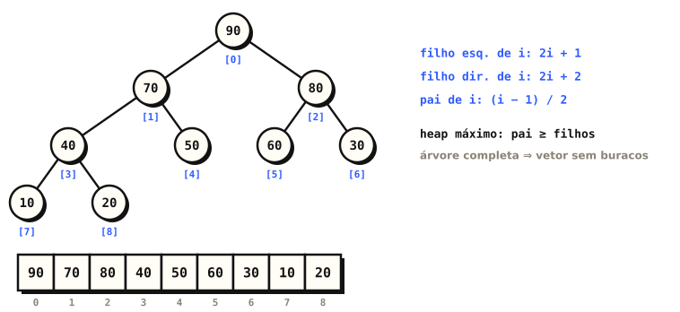
(índices a partir de 0; com índices a partir de 1, fica esq = 2i, dir = 2i + 1, pai = i / 2)
9.3 Inserção: sobe (sift-up)
Coloque o novo elemento na primeira posição livre (fim do vetor), que mantém a árvore completa. Depois, enquanto ele for maior que o pai, troque com o pai. Ele sobe no máximo a altura da árvore: O(log n).

typedef struct { int v[MAX]; int n; } HEAP;
void trocar(int *a, int *b) { int t = *a; *a = *b; *b = t; }
void subir(HEAP *h, int i) {
while (i > 0 && h->v[(i - 1) / 2] < h->v[i]) {
trocar(&h->v[i], &h->v[(i - 1) / 2]);
i = (i - 1) / 2;
}
}
bool heap_inserir(HEAP *h, int x) {
if (h->n == MAX) return false;
h->v[h->n] = x;
subir(h, h->n);
h->n++;
return true;
}9.4 Remoção do máximo: desce (sift-down)
O máximo é v[0]. Para tirá-lo sem deixar buraco, mova o último elemento para a raiz e diminua n. Agora a raiz provavelmente é pequena demais: enquanto ela for menor que algum filho, troque com o MAIOR filho. Também é O(log n).
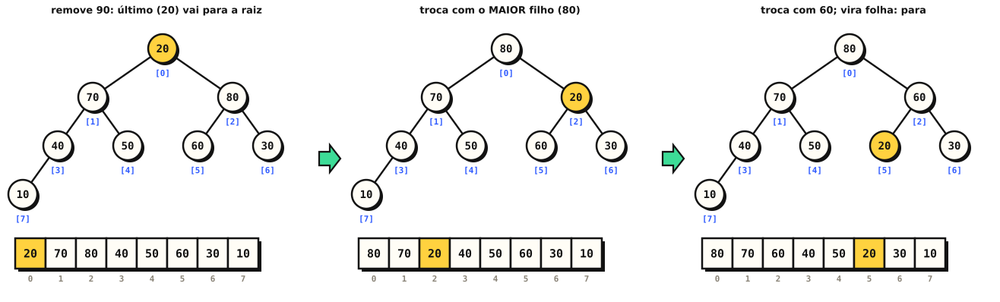
void descer(HEAP *h, int i) {
while (1) {
int e = 2 * i + 1, d = 2 * i + 2, maior = i;
if (e < h->n && h->v[e] > h->v[maior]) maior = e;
if (d < h->n && h->v[d] > h->v[maior]) maior = d;
if (maior == i) return; /* já está no lugar */
trocar(&h->v[i], &h->v[maior]);
i = maior;
}
}
bool heap_remover_max(HEAP *h, int *x) {
if (h->n == 0) return false;
*x = h->v[0];
h->v[0] = h->v[--h->n]; /* último vai para a raiz */
descer(h, 0);
return true;
}Na descida, troque com o maior dos filhos (no heap mínimo, com o menor). Trocar com o filho errado coloca um elemento menor acima de um maior e quebra o heap.
9.5 Construir um heap em O(n)
Inserir n elementos um por um custa O(n log n). Dá para fazer melhor com o vetor inteiro de uma vez: as folhas (metade final do vetor) já são heaps de um elemento. Basta chamar descer em cada nó interno, do último para o primeiro: de n/2 − 1 até 0.
void heap_construir(HEAP *h) {
for (int i = h->n / 2 - 1; i >= 0; i--)
descer(h, i);
}Metade dos nós são folhas e não descem nada; um quarto desce no máximo 1 nível; um oitavo, 2 níveis… A soma n/4·1 + n/8·2 + n/16·3 + … converge para cerca de n. Quase todo o trabalho é feito em nós baixos, que descem pouco.
n = 7, então os nós internos vão de 2 até 0.
| i | Ação | Vetor |
|---|---|---|
| 2 | 90 vs filhos 80, 95 → troca com 95 | 30 60 95 40 50 80 90 |
| 1 | 60 vs filhos 40, 50 → já é maior | 30 60 95 40 50 80 90 |
| 0 | 30 → troca com 95; depois 30 vs 80, 90 → troca com 90 | 95 60 90 40 50 80 30 |
9.6 Heapsort
Ordenação em duas fases: (1) construa um heap máximo com o vetor; (2) repita n − 1 vezes: troque a raiz (maior) com o último elemento do heap, diminua o tamanho do heap e desça a nova raiz. O maior vai para o fim, depois o segundo maior para a penúltima posição, e assim por diante.
void heapsort(int v[], int n) {
HEAP h; h.n = n;
for (int i = 0; i < n; i++) h.v[i] = v[i];
heap_construir(&h);
for (int fim = n - 1; fim > 0; fim--) {
trocar(&h.v[0], &h.v[fim]); /* maior vai para o fim */
h.n = fim; /* encolhe o heap */
descer(&h, 0);
}
for (int i = 0; i < n; i++) v[i] = h.v[i];
}| Propriedade | Heapsort |
|---|---|
| Tempo (pior, médio, melhor) | O(n log n) |
| Memória extra | O(1) (no próprio vetor; a cópia acima é só didática) |
| Estável? | não |
9.7 Alterar prioridade
Se a prioridade de um elemento aumentar (heap máximo), ele pode estar abaixo de um pai menor: chame subir. Se diminuir, chame descer. Ambos O(log n), desde que você saiba o índice do elemento (normalmente guardado num vetor auxiliar de posições).
(a) Insira 30, 60, 90, 40, 50, 80, 95, nessa ordem, num heap máximo vazio. Qual o vetor final? Compare com o do exemplo da seção 9.5. (b) No heap da Figura 9.1, remova o máximo duas vezes e dê o vetor. (c) O vetor [50, 30, 40, 10, 35, 20] é um heap máximo? (d) Por que o heap é guardado em vetor e a ABB não?
Revisão, armadilhas e gabarito
10.1 Resumo para a véspera
TAD e C
- TAD = operações (interface .h) + representação escondida (.c, struct opaca).
mallocpode dar NULL; todo malloc tem um free; guarde o próximo antes do free.- Apagar com
T **para zerar o ponteiro do usuário.
Pilha (LIFO)
- Vetor:
topo= índice do último; vazia −1; cheia MAX−1. - Encadeada: insere e remove no início.
- Usos: parênteses, pós-fixa (1º desempilhado é o operando da direita), recursão, desfazer.
Fila (FIFO) e deque
- Circular:
i = (i+1) % MAX; recuar:(i−1+MAX) % MAX. - Vazia × cheia: contador, ou uma posição sempre livre.
- Encadeada: ponteiros início e fim; ao esvaziar, fim = NULL.
- Deque encadeado: lista dupla.
Listas
- Sequencial: acesso O(1), inserir/remover O(n), busca binária se ordenada.
- Encadeada: inserir/remover O(1) dado o local; liga o novo antes de desligar o antigo.
- Cabeça: sem casos especiais. Circular: cuidado com laço infinito. Dupla: remove dado o nó.
- Generalizada: átomo ou sublista (cabeça, cauda, profundidade).
- Cruzada: nó em 2 listas (linha e coluna), para matriz esparsa.
Árvores binárias
- Nível i: até 2i nós. Altura h: até 2h+1−1 nós.
- Vetor: filhos 2i+1, 2i+2; pai (i−1)/2.
- Pré RED, em ERD, pós EDR, nível usa fila.
- Liberar em pós-ordem. Pré + em reconstroem.
ABB
- esq < nó < dir em toda a subárvore; em-ordem ordenada.
- Inserção sempre como folha.
- Remoção: folha / 1 filho sobe / 2 filhos → sucessor (menor da direita).
- O(h): log n a n.
AVL
- FB = h(esq) − h(dir) ∈ {−1, 0, +1}.
- +2 & filho +1 → direita · −2 & filho −1 → esquerda.
- +2 & filho −1 → dupla esq-dir · −2 & filho +1 → dupla dir-esq.
- Inserção: ≤ 1 rotação. Remoção: até O(log n).
Rubro-negra
- Raiz preta, NIL preto, sem vermelho-vermelho, mesma altura negra.
- Insere vermelho. Tio vermelho → recolore e sobe. Tio preto → zigue-zague: rotação no pai; reta: rotação no avô + troca cores.
- Altura ≤ 2 log₂(n+1).
Heap
- Completa + pai ≥ filhos (máx). Máximo na raiz.
- Inserir: fim + sobe. Remover: último na raiz + desce pelo maior filho.
- Construir: desce de n/2−1 até 0, O(n).
- Heapsort O(n log n), in-place, não estável.
Tabela de custos
| Estrutura | Buscar | Inserir | Remover | Obs. |
|---|---|---|---|---|
| Pilha / fila | — | O(1) | O(1) | só nas pontas |
| Lista sequencial ordenada | O(log n) | O(n) | O(n) | desloca |
| Lista encadeada | O(n) | O(1)* | O(1)* | *dado o local |
| ABB | O(h) | O(h) | O(h) | h entre log n e n |
| AVL / rubro-negra | O(log n) | O(log n) | O(log n) | pior caso garantido |
| Heap | máx: O(1) | O(log n) | máx: O(log n) | buscar outro: O(n) |
10.2 Armadilhas clássicas
- Na fila encadeada, esquecer
fim = NULLao remover o último. - Na inserção encadeada, fazer
p->prox = novoantes denovo->prox = p->prox. - Dar
freenum nó e depois ler->proxdele. - Em pós-fixa, inverter os operandos de − e /.
- Verificar ABB só entre pai e filho, e não na subárvore inteira.
- Na remoção com dois filhos, usar o maior da subárvore direita (o certo é o menor da direita, ou o maior da esquerda).
- Trocar o sinal do FB, ou escolher rotação simples quando o filho tem sinal oposto.
- Na RN, inserir o novo nó preto (quebra a altura negra), ou esquecer de pintar a raiz de preto no fim.
- No heap, descer trocando com o filho errado; ou achar que o heap está ordenado.
10.3 Gabarito
1.1 (a) Especificação: quais operações existem e o que fazem (o contrato, no .h). Implementação: representação concreta e código (no .c). (b) Para esconder os campos: o usuário só pode usar ponteiros e as funções do TAD (encapsulamento). (c) Comportamento indefinido: a memória já foi devolvida e pode conter lixo, ser reutilizada ou derrubar o programa.
2.1 (a) Base → topo: 1 5. (b) {[()]}() sim; ([)] não. (c) 6 / 2 = 3; 3 · 4 = 12; 3 + 12 = 15. (d) A B C + * D −.
3.1 (a) Vetor [E, F, C, D]. (b) inicio = 2, fim = 2, qtd = 4. (c) Sim: antes dela havia qtd = 3. Passo a passo: A, B, C nos índices 0–2; rem tira A (inicio 1); D no 3; E no 0 (fila cheia, qtd 4); rem tira B (inicio 2); F no 1.
4.1 (a) É preciso percorrer até o último nó. Fica O(1) guardando um ponteiro para o último (ou usando lista circular com ponteiro para o último). (b) p->ant->prox = p->prox (ou, se p é o primeiro, L = p->prox); se p->prox != NULL, p->prox->ant = p->ant; depois free(p). (c) cabeça = (a, b); cauda = (c, (d, (e))); 5 átomos; profundidade 3. (d) Comum: 200 000 posições. Cruzada: cerca de 5 · 1000 + 500 + 400 = 5 900.
5.1 (a) altura(B) = 2 (B → E → H); nível(G) = 3; 3 folhas (D, H, G). (b) Máximo 25 − 1 = 31; mínimo 5 (degenerada). (c) Raiz +, com * à esquerda (a e −(b, c)) e d à direita. Pré: + * a − b c d; em: a * b − c + d; pós: a b c − * d +. (d) É a árvore da Figura 5.3: A com B (filhos D, E) à esquerda e C (filho direito F) à direita.
6.1 (a)
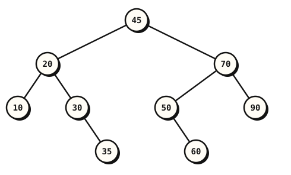
(b) O 20 tem dois filhos; o sucessor é o 30 (menor da direita). O 30 sobe e seu filho 35 ocupa o lugar dele: 45 → (30 → 10, 35), (70 → 50 → 60, 90). (c) O sucessor do 45 é o 50; o 60 sobe no lugar do 50: raiz 50, esquerda 30 (10, 35), direita 70 (60, 90). (d) 10 30 35 50 60 70 90.
7.1 (a) Inserindo 10: o 30 fica com +2 e o 20 com +1 → LL, rotação à direita em 30 (raiz 20). 25 e 40 entram sem problema. Inserindo 50: o 20 fica com −2 e o filho 30 com −1 → RR, rotação à esquerda em 20.
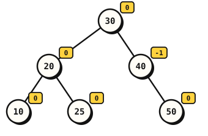
(b) FB(50) = +2 e FB(20) = −1: caso LR. Rotação à esquerda em 20, depois à direita em 50: raiz 30 com filhos 20 e 50. (c) Com |FB| ≤ 1, o número mínimo de nós de uma AVL de altura h cresce como Fibonacci (N(h) = N(h−1) + N(h−2) + 1), ou seja, exponencialmente em h. Logo h = O(log n).
8.1 (a) Raiz vermelha viola a propriedade 2 (mas pintá-la de preto sempre corrige, sem quebrar as outras). Dois vermelhos seguidos violam a propriedade 4. (b) 5 vira raiz preta; 10 entra vermelho; 15: pai 10 vermelho, tio NIL, linha reta → caso 3, rotação à esquerda em 5 e troca de cores (10 preto, 5 e 15 vermelhos); 20: tio 5 vermelho → caso 1, 5 e 15 ficam pretos e 10 vermelho; como 10 é raiz, volta a preto. Final: 10 (P) com 5 (P) e 15 (P), e 20 (V) à direita do 15. (c) Precisa ser a árvore cheia de 3 níveis: com todos pretos, todo caminho até um NIL precisa ter o mesmo comprimento. Altura negra 3.
9.1 (a) [95, 50, 90, 30, 40, 60, 80]. É diferente do construído em O(n) ([95, 60, 90, 40, 50, 80, 30]): os dois são heaps válidos. Um mesmo conjunto admite vários heaps.
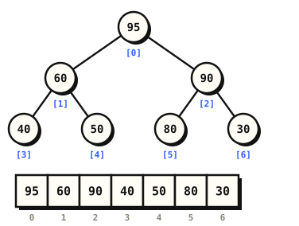
(b) 1ª remoção: [80, 70, 60, 40, 50, 20, 30, 10] (Figura 9.3). 2ª: o 10 vai para a raiz e desce pelo 70 e pelo 50: [70, 50, 60, 40, 10, 20, 30]. (c) Não. A raiz 50 é maior que 30 e 40, mas o 30 (índice 1) tem como filhos o 10 e o 35 (índices 3 e 4), e 35 > 30. (d) O heap é sempre uma árvore completa, então o vetor não tem buracos e os índices dão pais e filhos. Uma ABB pode ter qualquer forma, e no vetor sobrariam muitos espaços vazios.
Refaça à mão, sem olhar: (1) uma fila circular com várias voltas; (2) inserir e remover numa lista dupla, desenhando os ponteiros; (3) os quatro percursos de uma árvore; (4) inserções e as três remoções numa ABB; (5) uma sequência de inserções AVL com todas as rotações; (6) inserções numa rubro-negra; (7) inserir, remover e construir um heap. Isso cobre quase tudo que costuma cair.